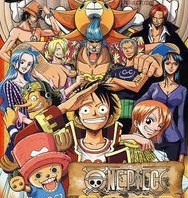

海贼王

基本简介
《海贼王》是日本漫画家尾田荣一郎的作品，描述的是一个名叫路飞的少年想成为海贼王，
因误食了香克斯收藏的恶魔果实，变成了橡胶人的故事。恶魔果实使路飞永远不能游泳，
但他始终没有改变成为海贼王的理想“找到传说中哥尔•D•罗杰的秘宝，并且成为海贼王”开始了冒险之旅。
剧情简介
财富、名声、权力，曾经拥有世界上一切的“海贼王”哥尔·D·罗杰，在临死前留下了一句话，
让全世界的人们，趋之若鹜，奔向大海：“想要我的财宝吗？想要的话可以给你，去伟大的航道找吧！
我把一切都放在那里了！”于是所有的人们开始起航，趋之若鹜的奔向大海，世界迎来了“大海贼时代”
原声资料
OP 片头曲
| 序号 |
集数 |
歌名 |
主唱 |
| OP1 |
1～47 |
ウィーアー!（WE ARE！） |
北谷洋 |
| OP2 |
48～115 |
Believe |
Folder5 |
| OP3 |
116～168 |
ヒカリヘ（向着阳光) |
The Babystars |
| OP4 |
169～206 |
BON VOYAGE!（一路顺风) |
BON-BON BLANCO |
| OP5 |
207～263 |
ココロのちず （心之航海图) |
BOYSTYLE |
| OP6 |
264～278 |
BRAND NEW WORLD |
D-51 |
| OP7 |
279～283 |
ウィーアー!（WE ARE！） |
7人の麦わら海贼団 |
| OP8 |
284～325 |
Crazy Rainbow |
タッキー&翼 |
| OP9 |
326～372 |
Jungle P |
5050 |
| OP10 |
373～394 |
ウィーアー!（WE ARE！） |
东方神起 |
| OP11 |
395～425 |
share the world |
东方神起 |
| OP12 |
426～458 |
风をさがして（寻找风) |
矢口真里とストローハット |
ED 片尾曲
| 序号 |
集数 |
歌名 |
主唱 |
| ED1 |
1～30 |
Memories |
大槻真希 |
| ED2 |
31～63 |
RUN! RUN! RUN! |
大槻真希 |
| ED3 |
64～73 |
私がいるよ（I'm Right Here!） |
TOMATO CUBE |
| ED4 |
74～81 |
しょうちのすけ （That's a fact!） |
推定少女 |
| ED5 |
82～94 |
BEFORE DAWN |
AI-SACHI |
| ED6 |
95～106 |
Fish |
The Kaleidoscope |
| ED7 |
107～118 |
GLORY-君がいるから（因为有你） |
上原多香子 |
| ED8 |
119～127
129～132 |
Shining Ray |
Janne Da Arc |
| ED9 |
133～156 |
Free Will |
Ruppina |
| ED10 |
157～168 |
Faith |
Ruppina |
| ED11 |
169～181 |
A to Z ～ONE PIECE Edition～ |
ZZ |